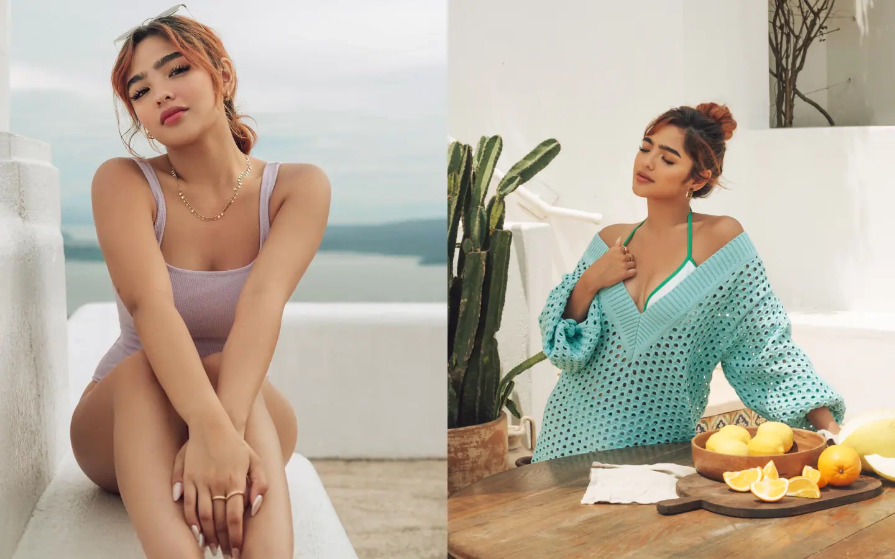
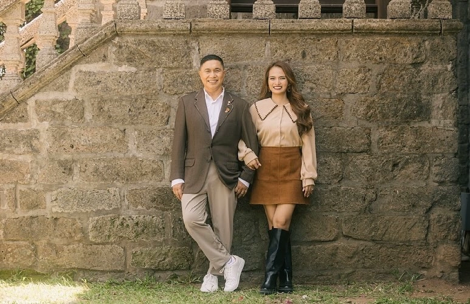
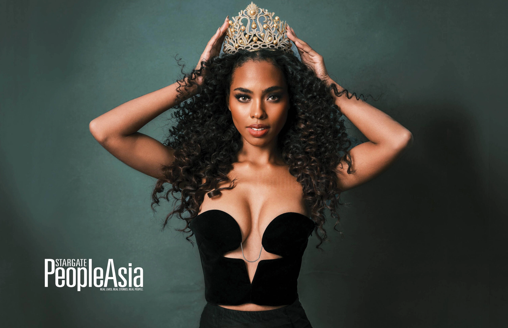
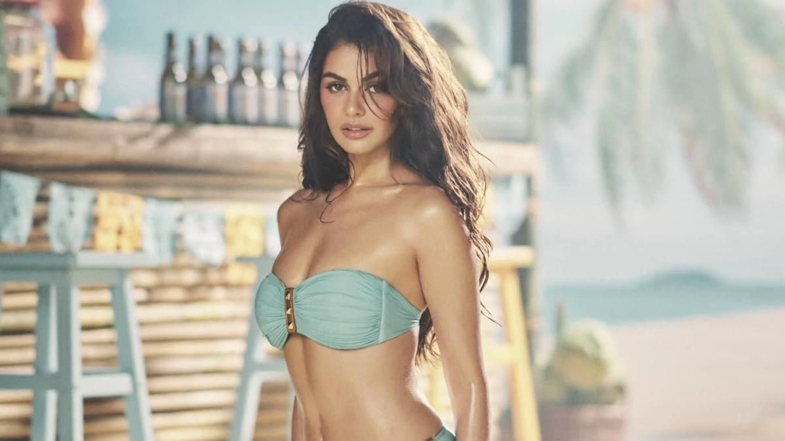
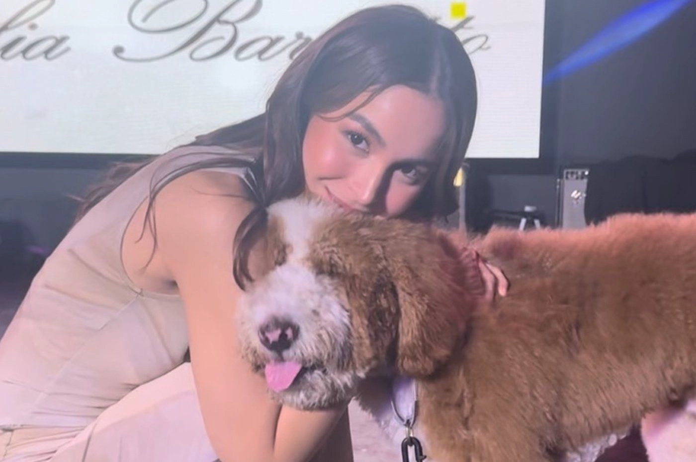

Andrea Brillantes on going to college: ‘I really am planning’
Published Dec 12, 2024 09:56 PM PHT

Kapamilya actress Andrea Brillantes revealed that she wants to further her education and get a college degree in the future. She gave this answer in an ambush interview during the Game 2 of the UAAP Men’s Basketball Finals where she was watching and came to support the UP Fighting Maroons earlier this week.
Andrea has always been vocal about finishing her studies.
READ: Andrea Brillantes on being misunderstood: ‘I’m not perfect’
When asked if given the chance to pursue a college degree, the Kapamilya star didn’t hesitate to answer yes.
“Actually, gusto ko po talagang bigyan ng time yung pa- aaral ko so I think it’s not just if given the possibility, I really am planning na makapag-college ako ng seryoso,” she revealed.
Some of her friends from the industry such as Bea Borres and Awra Briguela are currently enrolled in Ateneo de Manila University and University of the East, respectively. Bea is a college student while Awra is finishing up her years in Senior High School.
The 21-year-old actress added that she hopes to study in a UAAP school as well but didn’t disclose her dream school just yet in hopes it wouldn’t be jinxed. There are eight UAAP schools–– De La Salle University, Ateneo de Manila University, University of the Philippines, University of Sto. Tomas, Far Eastern University, University of the East, National University, and Adamson University.
“Yes, nangangarap ako na makapasok ako sa UAAP school ayoko lang banggitin kung saan kasi baka majinx or nashshy ako baka asarin ako ng mga tao. Nangarap ako of course,” she added.
READ: Andrea Brillantes looks back at her slap scene with Dimples Romana
While she isn’t going to college any time soon due to her busy schedule, Andrea remains positive in getting her college degree in her dream university.
“Kumakayod pa ako eh,” she humbly answered.
Previously, Andrea recalled how she had to stop schooling for her work, a decision she had to make for herself.
“Dati nag stop ako sa pag-aaral nung nag trabaho ako for Kadenang Ginto at napakalaking desisyon para sa akin. Mahirap yun para sa akin kasi ayoko naman talagang itigil yung pag-aaral ko pero sa buhay natin meron tayong kailangan harapin at piliin. Kailangan natin gumawa ng big decisions in life. Pinili ko mag focus muna sa pagtratrabaho ko,” she shared.
“Pero di ko pa rin kinalimutan ang pagaaral at binalikan ko pa rin ito dahil importante sa atin ang edukasyon… Wag rin tayo mapressure dahil lahat tayo may sari-sariling storya,” she added.
LOOK: Jose Manalo, fiancée Mergene Maranan share prenup photos
Published Dec 13, 2024 08:21 PM PHT

Television personality Jose Manalo and former EB Babes member Mergene Maranan recently shared their prenup photos after announcing their engagement earlier in December.
As seen on Mergene's social media page, the couple had a vintage theme for their photoshoot.
"Hehe… kaya panay ang PADER-MA KO," Jose commented, referencing a photo of himself and Mergene by a wall.
Their prenup photographer, Mico Gonzales, also shared a photo compilation of the couple.
“Smile! 😉 @therealjosemanalo @marananmergene,” he simply captioned.
According to Mergene’s reply in the comment section, the shoot was conducted back in April at Las Casas Filipinas de Acuzar in Bagac, Bataan.
The couple also had another winter-themed prenup photo session in Canada, where they took pictures in the middle of a snowy field.
“Canada team salamat ng marami… 🥰,” the former EB Babe member wrote. They also captured sweet moments on the Peace Bridge in Calgary, Canada.
On December 7, Mergene shared a video of Jose's marriage proposal to her.
“The easiest YES I’ve ever said. 💍 02/12/24 @therealjosemanalo,” she captioned the post.
In the video, Jose sang Yeng Constantino’s song "Ikaw" then suddenly walked toward the pool area, leaving their family and friends confused about his actions.
“Saan ka punta? Saan ka punta, Kuya (Jose)?” someone taking the video asked.
Lights lit up the pool area decorated with flowers, along with the words, “Will you marry me?”
Mergene, clearly in disbelief, responded, “Weh? Ano ‘yan? Totoo ba ‘yan? Hala! Nahihiya ako!”
Jose then knelt in front of her and asked her to be his wife.
“Mahal, alam mo na iyon. Kilala mo naman ako. Will you marry me?,” Jose asked in the video.
“It’s you. It’s always been you.. 💍❤️02/12/24 @therealjosemanalo,” Mergene said in another caption.
Fans were quick to react to the couple’s announcement.
“prng kht anong seryoso nya, nttwa nlng tlg ako. 😂iba po tlg karisma ni mayor e. your lucky po to have him miss mergene👏,” a netizen said.
Another one remarked, “Congrats mayor jose... ang sarap nmn ng pasko nakaka goodvibes.”
Mergene also shared photos from her bridal shower, where she reunited with former EB Babes members Lian Paz, Ann ‘Hopia’ Boleche, and Joyce Burgos.
“Salamat sa pag tanggap ng role.. Mga tagapagmana ng bouquet, pero taga buhat muna ng laylayan.😁 Insert catherine haha #teambride,” the former dancer
“You are one of the few genuine women I know mars! I love you! Can’t wait for the big day! 😍😘,” Lian commented.
Vic Sotto and Pauleen Luna’s eldest daughter Tali, is expected to be part of the couple’s wedding entourage as Mergene posted a photo of Tali alongside the enrourage.
Jose was previously with his late estranged wife, Anna Lyn, and they had four children: Myki, Ai, and actors Benj and Niccolo.
Although Jose and Mergene did not publicly share their love story, their relationship was confirmed after they were frequently seen together at various events. They later had children whom they often feature on social media.
Chelsea Manalo discusses her duties as Miss Universe Asia
Published Dec 13, 2024 12:53 PM PHT

Chelsea Manalo discussed the duties that she will be carrying out following her clinching the Miss Universe Asia title.
"We will be working hand in hand with the different continental queens and with Miss Universe, Miss Victoria so [we will be] working with the charity, working with the organization," she relayed in an interview with Boy Abunda.
Chelsea went on: "We are part of Miss Universe this year, for a whole year we will be touring around, working with charities and at the same time traveling for best causes that the organization believes."
The Filipino beauty queen also recounted her experience competing in the international beauty pageant back in November in Mexico.
"Iba 'yung adrenaline when you're there and I will add up ha, we are 128 girls so iba 'yung feeling when you see them personally, when you're there," she said.
"It will get to you a little bit but later on mare-realize mo na it's not the [competition with the other girls], it's really you so I tried to embrace all of these feelings. It's good kasi mas nakita ko 'yung personality ko here, how powerful I was, and I just loved the whole experience. It's the memory I will forever treasure," she added.
Aside from the Miss Universe Asia title, Chelsea also won the Best National Custome in the recent Miss Universe.
"To the team and Sir [Manny Halasan] for the creation. Salamat sa lahat ng nag tiwala at nag Vote! Para sa'yo Philippines!" the beauty queen wrote on social media following her big win.
Chelsea's national costume was dubbed as "Hiraya" which was described as "a vision of what will become…. It is clear in your mind, and it speaks truthfully in your heart."
Meanwhile, Miss Universe Peru was named as Miss Universe Americas, Miss Finland as Miss Universe Europe, and Miss Nigeria as Miss Universe Africa and Oceania.
Victoria Kjaer Theilvig of Denmark was crowned as Miss Universe 2024.
Janine Gutierrez is in Her Sexiest Yet for This Calendar Shoot—Wow!
Published Dec 13, 2024 10:17 AM PHT

Janine Gutierrez might just be your most stylish face of a calendar for 2025! It has been a big year for Janine but it’s an even bigger year for her fashion-wise, too. As the face of the 2025 calendar for Asia Brewery, we see the Lavender Fields star in what might be her sexiest shoot yet. Fronting different drinks, Janine is seen donning daring and chic looks—whether it be at a day in the beach or a sexy date night.
From what has been released so far, we get great Holiday looks suggestions for every kind of party. Our favorite must be the gold backless dress, complementing the Yuzu Highball cocktail.
The shoot was lensed by BJ Pascual with glam by Anthea Bueno and Jay Aquino. To get to know more on how the looks were curated, we spoke to Studio 24c, the stylists for this shoot. “We matched the outfits of each layout with their different products showing variety per look,” says Studio 24c with Maita Baello, Melville Sy, and Alvin Navarro spearheading the shoot. “We made sure that it was sexy but still sophisticated—true to Janine’s style.
This sexy sophistication was also seen throughout the shoot in her other looks like the red bikini top with skirt, and the daring blue swimwear, which we all loved.
Janine has been knocking it out this year with her looks and if this calendar shoot is any indication, 2025 will be an even bigger and stylish year for the star.
Meet Julia Barretto’s 6-month-old giant poodle Fitz
Published Dec 13, 2024 01:05 AM PHT

MANILA — With a string of endorsements, exciting business ventures, and acclaimed projects, including an international series, a blockbuster hit, and an entry to the 50th Metro Manila Film Festival, 2024 was undoubtedly a remarkable year for actress Julia Barreto.
The “blessings” Barretto earned the past months motivate her to work even harder in the next, with three major productions already lined up for 2025, setting her up for yet another successful year.
“I am also very surprised myself but I am super grateful. I have been doing this since a kid and I have been working since hard, trying to give my best everyday. When you see you are rewarded somehow, it is an extra push. It is humbling,” she said during her press conference in Quezon City, Thursday.
“Life is a series of up and downs. So I am trying my best to be present and be grateful with what I have. There is still so much I have to work hard for. I am just so excited to see where my journey takes me, she added.
Among the exciting material the actress will be shooting for is the drama series “What Lies Beneath” and “Hello Heaven”, as well as the reality show “Artista Academy”.
“So, parang it will be really refreshing for me na next year na makagagawa ako ng story as thrilling as What Lies Beneath. I am very very excited to work with ABS-CBN for this series,” she explained.
“And then I have the opportunity again to work with Direk Antoinette Jadaone for Hello Heaven. I am super super excited, and I've worked with Direk Tonette in Love You to the Stars and Back in 2017. The movie that I did with Joshua Garcia. This will be our second project together and I’ve been telling her for many years,” she added.
Barretto will also be marking her first time as a host in 2025 with “Artista Academy.”
“Hindi ko alam kung papaano mape-play out yung mga bagay-bagay. That’s something na I am gonna start preparing for in January 2025,” she enthused.
Amid her busy, back-to-back schedules, Barretto revealed that she is looking forward to coming home to unwind with her giant poodle, Fitz, — her new favorite stress reliever.
The 6-month-old, who she brought with her during the press conference, was a gift from her boyfriend Gerald Anderson.
“He’s like a best friend. Growing up, addition to the family. Everything is just so much better. Parang may companion ka talaga. Every day, the whole day, may inuuwian ka na happiness sa bahay, so he’s really brighten up our homes. He’s super malambing. He’s very clingy pero masaya,” she shared.
Barretto revealed it was also Anderson who influenced her growing love for big dog breeds.
“I had a fear and I was able to get over that. Siguro, medyo malaki na rin ako. I started with a small dog and then later on, napamahal ako sa malalaki talaga na dogs. I think that’s because also of the influence of Ge, he has a lot of big dogs," she said.
Barretto, along with Carlo Aquino, is set to lead MMFF entry “Hold Me Close,” which will premiere in cinemas on December 25.
Watch more on iWantTFC.com. Watch hundreds of Pinoy shows, movies, live sports and news.